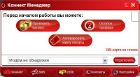
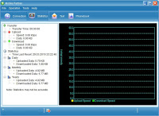
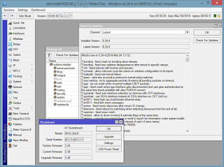
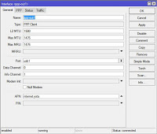
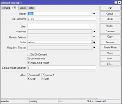
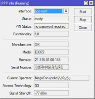
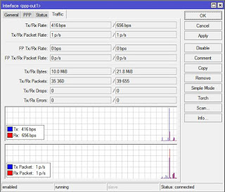
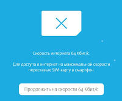

Чем бы дитя не тешилось - лишь бы мобильные интернеты не настраивало ;) В этом посте, несмотря на то что уже поздняя ночь, я постараюсь рассказать вам о том как настроить 3G-интернет в Mikrotik 951G-2HnD с использованием Huawei E3372H (МТС 829F) в качестве модема. Здесь сразу хотелось бы уточнить несколько моментов, модемы Huawei бывают двух разновидностей - HiLink и Stick. У меня именно Stick вариант, если у вас HiLink модем, то инструкция будет в корне отличаться (возможно в будущем я дополню ее и расскажу как настроить HiLink модем в Mikrotik'е). Если кто-то вдруг не знает, то вкратце объясню разницу между HiLink и Stick-модемами, вернее правильнее - между HiLink и Stick прошивками для модемов. Т.к. один и тот же модем может присутствовать на рынке как в HiLink, так и в Stick вариантах (например МТС 829F, он же Huawei E3372H поставляется с HiLink прошивкой, а точно такой же модем, который можно приобрести у оператора Tele2 - уже HiLink).
Итак, если ваш модем имеет Stick прошивку, то после того как вы его установите в ПК и установите драйвера и ПО со встроенного CDROM раздела, то в диспетчере устройств он будет определяться у вас как, собственно, модем (в разделе Телефоны и модемы), а также несколько COM портов. Плюс к этому, для того чтобы выйти в интернет, вам придется запускать специальное ПО под названием дашборд (dashboard):

На двух фото выше изображены дашборды от МТС - Коннект Менеджер и стандартный Huawei'евский дашборд от Mobile Partner. Все это справедливо если наш модем имеет stick-прошивку, т.е. здесь мы имеем дело с ПО для выхода в интернет, а само устройство у нас определяется как модем и несколько COM-портов.
Совершенно по-другому обстоят дела если мы имеем HiLink прошивку. В этом случае после установки ПО с CDROM раздела модем у нас определяется как виртуальная сетевая карта (RNDIS адаптер) и никакого ПО для соединения с интернет нет. Модем устанавливает соединение с интернет автоматически, а для управления настройками модема есть web-интерфейс. Т.е. фактически в этом случае модем представляет собой ethernet-роутер, имеющий собственный IP адрес в локальной сети (например, 192.168.8.1). Ваш ПК получает на интерфейс RNDIS адаптера (виртуальной сетевой карты) IP из подсети модема - 192.168.8.0/24, и выходит через шлюз 192.168.8.1 в интернет. Само соединение, естественно устанавливается в модеме, просто в данном случае он дополнительно выполняет функции роутера, в котором поднимается NAT и т.д. и т.п.
В этой статье мы рассмотрим именно модем Huawei E3372H со Stick прошивкой. Предполагается что вы представляете себе что такое Winbox (утилита для конфигурирования Mikrotik) и умеете ее запускать и соединяться с вашим роутером. Итак, первое что мы должны сделать, это запустить WinBox и войти на ваш Mikrotik (по-умолчанию он имеет IP - 192.168.88.1, имя пользователя: admin и пустой пароль, также не забываем что WinBox умеет работать по MAC-адресам, т.е. соединиться с роутером вы можете и по его MAC'у).
Если это был первый вход, то Mikrotik предложит вам сбросить настройки или воспользоваться конфигурацией по-умолчанию. Сбрасывать ничего не нужно, поэтому соглашаемся использовать конфигурацию по-умолчанию. Далее, я крайне рекомендую вам обновить прошивку Mikrotik'а и версии пакетов до последних версий (для этого роутер уже должен иметь настроенное подключение к интернет). В дефолтной конфигурации как раз все настроено, т.е. Ethernet-1 порт настроен как WAN с DHCP клиентом, поэтому можно просто воткнуть в него "кабель с интернетом", например, от другого роутера, или кабель вашего проводного провайдера (если он выдает настройки по DHCP) и обновить прошивку и пакеты.
Делается это крайне просто, вначале обновляем прошивку через меню System -> Routerboard -> Upgrde, а потом обновляем пакеты из System -> Packages -> Check for updates. После обновления у меня получилась версия прошивки 3.30, а версия пакетов 6.34.4 от 2016-Mar-24 13:13.

Этот пост кстати, я пишу уже полностью через настроенный Mikrotik и E3372H, т.е. через мобильный интернет. За все прошедшее время "ни единого обрыва" ;) Ну так вот, теперь самое время подключить наш Huawei E3372H к USB порту Mikrotik'а. Вставляем модем, уже с SIM-картой и ждем какое-то время 1-2 мин. пока он определится системой (вообще это происходит гораздо быстрее, но лучше чуть-чуть подождать, тем более что модем должен поймать сеть оператора и т.д. и т.п.).
Проверяем есть ли у нас модем и "как он выглядит", для этого запускаем New Terminal в WinBox'е и там набираем:
/system resource usb print detail
В ответ получаем что-то вроде:
0 device="1:1" vendor="Linux 3.3.5 ehci_hcd" name="RB400 EHCI"
serial-number="rb400_usb" vendor-id="0x1d6b" device-id="0x0002"
speed="480 Mbps" ports=1 usb-version="2.00"
1 device="1:2" vendor="MOBILE" name="MOBILE" vendor-id="0x12d1"
device-id="0x1506" speed="480 Mbps" ports=0 usb-version="2.10"
Как видим - модем успешно видится Routerboard'ом, по-крайней мере как "композитное устройство". Не забываем что у него есть еще CDROM раздел, несколько COM-портов и т.д. и т.п. COM-порты принадлежащие USB-модему в Mikrotik'е называются не иначе как Channels (каналы). Ниже вы увидите как это используется. Заоодно заглядываем в Interfaces, где мы должны увидеть появившийся интерфейс ppp-out1.
Мы должны настроить его как:
[admin@MikroTik] > /interface ppp-client print
Flags: X - disabled, R - running
0 R name="ppp-out1" max-mtu=1476 max-mru=1476 mrru=disabled port=usb1
data-channel=0 info-channel=1 apn="internet.yota" pin="" user=""
password="" profile=default phone="*99#" dial-command="ATDT"
modem-init="" null-modem=no dial-on-demand=no add-default-route=yes
default-route-distance=0 use-peer-dns=yes keepalive-timeout=0
allow=pap,chap,mschap1,mschap2
Сделать это можно одной командой:
/interface ppp-client add apn=internet.yota dial-on-demand=no disabled=no info-channel=1 \
keepalive-timeout=0 max-mru=1476 max-mtu=1476 name=ppp-out1 phone=*99# \
port=usb1
Ну или если полностью, то:
/interface ppp-client
add add-default-route=yes allow=pap,chap,mschap1,mschap2 apn=internet.yota \
data-channel=0 default-route-distance=0 dial-command=ATDT dial-on-demand=no \
disabled=no info-channel=1 keepalive-timeout=0 max-mru=1476 max-mtu=1476 \
modem-init="" mrru=disabled name=ppp-out1 null-modem=no password="" phone=\
*99# pin="" port=usb1 profile=default use-peer-dns=yes user=""
Либо, как вариант, проставив соответствующие параметры непосредственно в интерфейсе WinBox'а, у вас вообщем-то все будет также, только APN вы должны изменить на APN вашего оператора сотовой связи (в моем случае apn = internet.yota).

Но если вы думаете что на этом настройка закончилась - то ошибаетесь. Какие-либо другие модемы, после подобной настройки сразу же бы подняли соединение и получили доступ в интернет, однако, не E3372H. Поэтому читаем дальше ;)
После того как вы настроили интерфейс ppp-out1, проверьте нажав кнопку Info как определился ваш модем:

Как видно из скриншота у меня он определился как E3372 (хотя на самом деле он у меня E3372H) с версией прошивки 21.315.01.00.143 (одна из последних МТСовских прошивок), а также то, что он успешно зарегистрировался в 3G сети оператора MegaFon (регистрация в сети говорит только о том что он зарегистрировался в сети оператора, не стоит путать это с установлением соединения с интернет, соединение у нас еще не установлено).
Ту же самую информацию кстати можно было получить и в терминале с помощью:
/interface ppp-client info 0
Вообще на эту тему есть неплохой мануал - ATandT MercuryConnectUSBHowTo.
Теперь пришло время сделать главное - а именно переключить модем в нужную композицию (!), иначе соединение не установится. Открываем терминал в Mikrotik'е и соединяемся с командным AT-портом модема (вообще на тему композиций модемов Huawei можно написать отдельный трактат и даже половину Wiki, поэтому здесь особенно вдаваться в подробности я не буду, просто сделайте по написанному и "будет вам счастье").
/system serial-terminal usb1 channel=1
Соединяемся на COM-порт модема и вводим там команду ATE1 для включения локального эха, чтобы вы видели что вы набираете в терминале. Далее вводим команду:
AT^CURC=0 (для того чтобы модем не сыпал в порт RSSI (Received Signal Strength Indication) и прочим)
И наконец вводим команду смены композиции модема:
AT^SETPORT="FF;10,12,16,A2" - режим "без переключения". Т.е. в данном режиме первичная композиция модема (initial mode) отключена, т.е. задана как FF - Dummy (отсутствие переключения), а вторичная композиция (normal mode) задана как 10,12,16,A2 - т.е. 10 - модем, 12 - PC UI, 16 - RNDIS (у нас его нет), A2 - TF Card Reader.
По умолчанию выставлено "A1,A2,A1,A2"
Эта комманда может работать не со всеми версиями прошивок.
В более новых надо делать так AT^NVWREX=50091,0,60,1 0 0 0 FF 0 0 0 0 0 0 0 0 0 0 0 0 0 0 0 0 10 12 0 0 0 0 0 0 0 0 0 0 0 0 0 0 0 0 0 0 0 0 0 0 0 0 0 0 0 0 0 0 0 0 0 0 0 0 0
(https://www.lteforum.at/mobilfunk/firmware-versionen-hi-non-hilink-e3372h-inkl-mod.2691/seite-63.html)
После чего физически вынимаем модем из Mikrotik'а и вставляем его по новой. Модем будет находиться уже в рабочей композиции, поэтому соединение ppp-out1, когда он зарегистрируется в сети оператора должно подняться у вас в Mikrotik автоматически:

И теперь нам останется добавить правило NAT для firewall'а (правила маршрутизации создаются динамически при поднятии соединения, т.к. в ppp-out1 мы поставили флажок Add default route) следующего вида:
/ip firewall nat add action=masquerade chain=srcnat comment="default configuration" \
out-interface=ppp-out1
После чего все наши ПК подключенные к Mikrotik'у смогут выйти в интернет (на тонкостях настройки DNS и DHCP я останавливаться не буду, во-первых потому что особенно там никаких тонкостей нет, а во-вторых потому что в конфигурации по-умолчанию все это в принципе настроено).
Любители фиксации TTL на исходящем интерфейсе могут также воспользоваться командой:
/ip firewall mangle add action=change-ttl chain=postrouting new-ttl=set:128 out-interface=ppp-out1
В данном случае мы зафиксировали исходящий TTL у всех пакетов на интерфейсе ppp-out1 в 128, что соответствует ПК с ОС Windows.
Во-избежание лишних вопросов, сразу отмечу, что если вы будете пытаться использовать симкарту Yota для смартфона или планшета в модеме вставленном в Mikrotik, то неизбежно получите окно вида:

Т.к. смартфонные симки Yota предназначены только для использования в смартфонах, планшетные - для использования в планшетах, ну а модемные - именно для использования в модемах. Данные ограничения введены оператором неспроста, и хотя существуют способы обойти их - это не тема этого поста и на любые подобные вопросы в комментариях я отвечать не буду.
Перед тем как я приведу традиционный раздел полезных ссылок, хотелось бы подвести краткие итоги, чему мы научились на основе этого поста:
Полезные ссылки
:local email [/snmp get contact]
:local mobile "+7ХХХХХХХХХХ"
:local reboottime [/system clock get time]
:local rebootdate [/system clock get date]
#####
:delay 30
/tool e-mail send to=$email
subject="$[/system identity get name] перезагружен!"
body="$[/system identity get name] перезагружен $rebootdate в $reboottime."
/tool sms send usb1 channel=2 "$mobile"
message="$[/system identity get name] rebooted!"
Скрипт рассчитан на выполнение в sheduler'е на startup'е и служит для отправки SMS и EMail сообщения, информирующего администратора о перезагрузке роутера. Вообще, функционал Mikrotik'а достаточно богат и если воткнуть в него USB модем, то тут может быть практически неисчерпаемый источник для вашей фантазии, какие уведомления и при наступлении каких событий отсылать с помощью SMS. Вплоть до того, что у вас есть какой-то сайт в интернете, который генерирует определенную информацию, Mikrotik с помощью GET запроса может прочитать ее, далее в скрипте вы ее обрабатываете и отсылаете Mikrotik'ом себе же в SMS. Хотите каждый час получать SMS с курсом доллара на телефон? Пожалуйста. Вашу фантазию здесь никто не ограничивает.